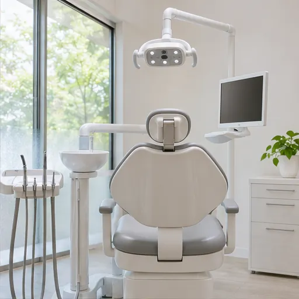

宿泊・観光
グランピング施設
- 観測期間
- 導入から4か月
- 口コミ件数の変化
- +82 件
AIにも選ばれるために。
口コミ365は、Googleマップの集客を支えるサービスです。口コミと掲載情報を整え、電話や経路検索など、お客様の反応から改善できます。
口コミ365本部の担当者がオンラインでご案内
口コミ365本部の公開事例
口コミ365を導入した店舗・施設について、本部が公開している変化を業種別に紹介します。写真は業種をイメージしたもので、実際の導入店舗の写真ではありません。
宿泊・観光
飲食

医療・歯科
出典：運営元・イエロ株式会社（口コミ365本部）の公開実績。口コミの増加数は各事例の公表値で、結果は店舗や運用状況により異なります。
対象業種
飲食店・美容室だけではありません。施設に来てもらう事業も、地域で問い合わせを受ける事業も。Googleマップに載せる情報は、お客様が選ぶときの判断材料になります。
営業時間や所在地を見て、行く店を決める。
施設の情報や口コミを見て、宿を比較する。
通いやすさや、利用者の感想を確認する。
設備やサービス内容を見て、体験先を選ぶ。
対応エリアや連絡先を確認して問い合わせる。
口コミ・Googleマップの運用
目の前のお客様対応が優先で、案内するタイミングを逃してしまう。
返信の文面を毎回考えるのはひと仕事。忙しいほど後回しに。
口コミや順位が気になるけれど、情報を集めるだけで手が止まる。
地域検索とAI検索
GoogleマップやGoogle検索で「近くのジム」と探す人もいれば、AIに「夜も通えるジムは？」と聞く人もいます。営業時間・所在地・サービス内容を分かりやすくしておくと、お客様が選ぶときの手がかりになります。
検索結果やAIでの紹介は、検索条件やサービスによって異なります。
店舗集客と費用対効果
検索順位が上がっても、それだけでは売上が増えたとは言えません。何を整え、どんな反応があり、実際の予約や問い合わせにつながったかを順番に見ます。
Googleマップ・Google検索・AI検索。まずは営業時間、場所、サービス内容を分かりやすく。
地図・検索・AI口コミやお店の返信は、お客様が「ここに行ってみよう」と考えるときの材料になります。
口コミ・返信電話ボタンやルート検索は関心の目安。予約・問い合わせ・来店後の売上は、店舗側で別に確認します。
予約・問い合わせ・売上これは概算です。来店や成約は予約台帳や会計記録で確認し、季節や他の広告の影響も考えて判断します。
運用を支える機能
口コミをお願いする、返信する、件数を確認する、営業時間を更新する。4つの場面で使い方を紹介します。
写真と画面は使い方のイメージです。
受付やお会計のあとに、QRコードやリンクでアンケートを案内できます。
返信のたたき台はAIに。内容を確認し、伝えたい言葉を添えて使えます。
口コミの傾向やキーワードごとの順位を確認し、運用の見直しに役立てられます。
連休の営業案内や最新のお知らせなど、Googleマップに載せる情報の更新に使えます。
使える機能やサポート範囲は、プラン・利用環境によって異なります。
利用の流れ
接客や設備など、事業に合わせてアンケートを用意します。
どんな点が印象に残りましたか？接客設備雰囲気受付や案内メッセージで共有。口コミを投稿するかはお客様ご自身が決めます。
受付・テーブルにPOP口コミを確認し、必要に応じてAIの文案をもとに返信します。
口コミを見ながら返信今は店舗や事業者のMeta広告とLINE公式アカウントの構築を支援しています。現場で実感するのは、広告で知ったお店でも、来店前には営業時間や口コミを地図で確認する人がいることです。地域の店舗なら、Googleビジネスプロフィールは集客費用を抑えながら見直せる、優先度の高い入口だと考えています。
最近は地図や検索に加え、AIに候補を聞いてお店を選ぶ人もいます。今から情報を整え、口コミに対応するなら、それを一つの場所で続けやすい口コミ365が候補になります。
Spady 代表 井上 博史
再生を押すとYouTubeのプレーヤーを読み込みます。
まずは無料診断の相談から
日時を選ぶと、口コミ365本部とのオンライン相談を予約できます。無料診断の内容や、自分の店舗・施設なら何から始めるかを相談できます。
無料診断の相談日時を選ぶ予約する前に
このページで行うのは、口コミ365本部とのオンライン相談の予約です。診断の実施方法や結果のお知らせ方法は、本部へご確認ください。
導入・利用は有料です。対象プラン、初期費用、月額費用、税込・税別、最低契約期間などの適用条件は、本部担当者にご確認ください。
たとえば、お客様への案内、返信文面の確認、営業時間などの情報更新があります。どこまでを店舗で行うか、どんなサポートがあるかは本部にご確認ください。
飲食店や美容室に限りません。宿泊施設、ジム、スクールなど、Googleマップを活用する事業者向けです。ご自身の業種や拠点数での利用条件は、本部にご確認ください。
口コミ件数・評価・検索順位・来店数などの向上を保証するサービスではありません。投稿はお客様自身の判断です。高評価だけに絞って依頼したり、口コミ投稿と引き換えに特典を提供したりする運用は行わないでください。
口コミ365本部の予約カレンダー
予約日時と参加方法は、予約画面の案内や本部からの確認メールでご確認ください。
予約はオンライン相談です。サービスの導入は任意で、ご希望の方には有料プランの内容と料金をご案内します。
予約情報は口コミ365本部（イエロ株式会社）が運営する予約フォームに入力します。送信前に、フォームに表示される案内・同意事項をご確認ください。
診断時にスムーズにご案内できるよう、「Spady（井上博史）紹介」は削除せず、そのまま送信してください。
入力した内容は、イエロ株式会社が相談対応やサービスの提供などに利用します。このLP（Spady）は予約フォームの入力内容を取得しません。広告計測への同意は予約とは別で、同意しなくても予約できます。
イエロ株式会社の公表方針では、法令上の例外などを除き、本人の同意なしに個人情報を第三者に提供しません。この説明は要点で、予約フォーム側に表示される同意事項もご確認ください。

このページの紹介者
Spady 代表 / 元 Meta Marketing Pro
地域の店舗・小規模事業者に向けて、Meta広告やLINE公式アカウントの構築を支援しています。このページはSpadyの紹介ページで、ご相談とサービス提供は口コミ365本部（イエロ株式会社）が担当します。